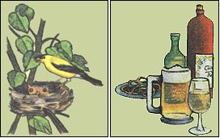
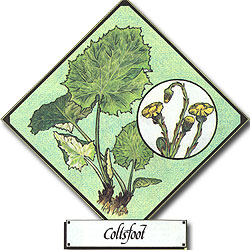

Lately, more and more people have begun to understand just how limited - in both variety and nutritional value - our "modern" diets have become. This realization has sparked a new and widespread interest in the culinary and therapeutic uses of herbs . . . those plants which - although not well-known today - were, just one short generation ago, honored "guests" on the dinner tables and in the medicine chests of our grandparents' homes. In this regular feature, MOTHER will examine the availability, cultivation, and benefits of our "forgotten" vegetable foods and remedies . . . and - we hope - help prevent the loss of still another bit of ancestral lore.
Coltsfoot ( Tussilago farfara ) is among the handsomest (and most unusual) of wild herbs. It's been known to physicians and natural healers for over 2,000 years, and its many reputed virtues would certainly make it seem worth investigating today!
For example, coltsfoot has been used as a remedy for colds, asthma, and chronic bronchitis. Indeed, its generic name comes from the Latin words tussis ago, meaning "I drive [out] a cough", and it's known as coughwort in some areas. The herb's reputed curative powers also extend to agues, inflammations, hot swellings, burns, erysipelas (St. Anthony's fire), and wheels . . . all of which are said to be relieved by poultices of crushed coltsfoot leaves or by internally taken forms of the herb.
The common methods of preparing Tussilago include steeping the leaves in hot water to make a tea . . . boiling 1 ounce of dried leaves in 1 quart of water, until the liquid is reduced by half, to produce a decoction which (when strained and sweetened with honey or licorice) can be given by the teacupful as needed . . . and smoking the crushed, dried leaves in a pipe.
The last practice has been recommended since the first century, when Pliny advised burning the leaves and roots on a bed of cypress charcoal, then drawing the smoke into the mouth through a reed and swallowing it. Today coltsfoot is the primary ingredient of British Herb Tobacco (the others being eyebright, betony, buckbean, rosemary, thyme, lavender, and chamomile), and many feel that it's just as efficacious as ever in loosening phlegm and relieving a persistent cough.
Although coltsfoot is considered a medicinal herb, it has some culinary uses as well. The young leaves can be cooked and served as a green . . . or fried in batter, included in omelets, and served with a tasty mustard sauce. Beer (called cleats ) and wine (called clayt wine ) can also be made from the herb.
In early spring the plants produce flowering stalks with numerous reddish bracts (or scales) and whitish, woolly hairs. Each stem bears a single bright yellow flower, resembling a flat-topped dandelion that closes up at night or when the sky is overcast.
It's only after these flowers have gone to silky-topped seed that the foliage appears: broad, heart- or hoof-shaped leaves with angular teeth along their margins and a soft, felted covering of whitish, woolly hairs on both top and bottom. The coating comes off the upper surfaces as the leaves grow and expand, and can easily be removed from the underside. (In fact, before matches were readily available, the felted covering was often gathered, wrapped in rags, soaked in a saltpeter solution, sun-dried, and then used as tinder!) The hairs topping the seeds are a favorite nesting material for goldfinches . . . and were once used as pillow stuffing by Scottish Highlanders.
Clayweed is another of coltsfoot's names, and the herb does well (growing from 6" to 18" in height) in poor, stiff soils. It prefers full sun but will flourish in moist or dry ground. Propagation is by seed or root cuttings . . . and if you're unable to find the plant in the wild, you can order seeds or roots from the Naturalists, Dept. TMEN, P.O. Box 435, Yorktown Heights, New York 10598 (catalog $1.00) and seedlings from Well-Sweep Herb Farm, Dept. TMEN, 317 Mt. Bethel Road, Port Murray, New Jersey 07865 (catalog 75 cents).
Be careful, though, when you plant this perennial, because - once established - the herb can be difficult to eradicate from fields and gardens where it's not wanted! !
|
 Gold-finches line their nests with silky seed hairs. . . Beer and wine can be made from the herb |
 |
|